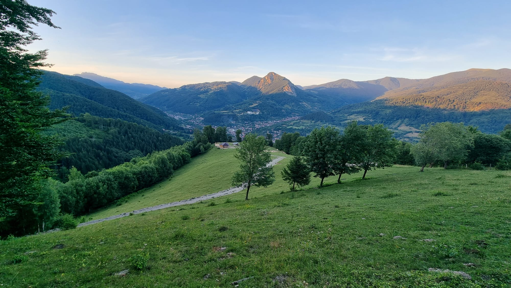
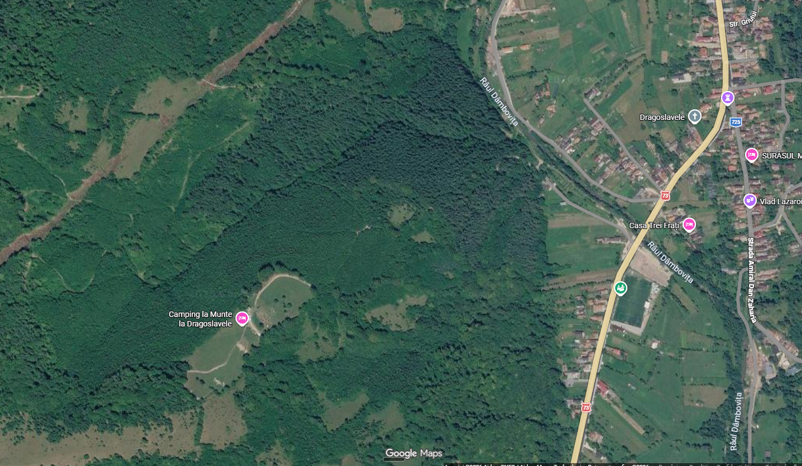
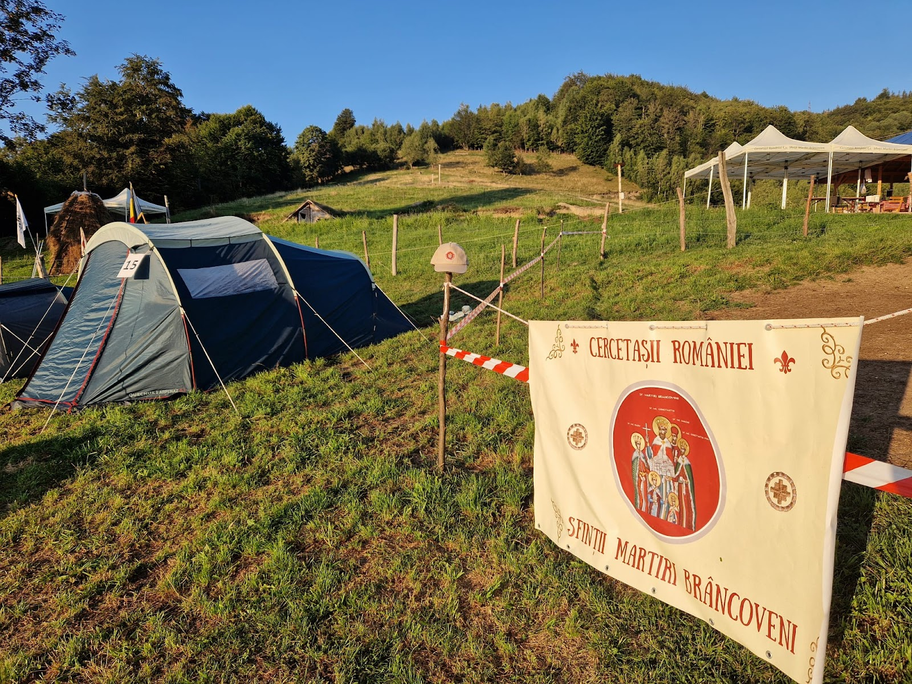

DRAGOSLAVELE, ARGEȘ
Cu cortul.
Cu muntele
în față.
Pui cortul în poiana de deasupra satului.
Seara ai duș cald, terasă și foc de tabără.
Aici vii pentru
ce ai în jur.
Munții se văd din camping. Cortul îl montezi pe una dintre platformele amenajate, iar masa o poți pregăti la terasa comună.
Mai întâi, un lucru de știut: ultima parte a drumului este forestieră. Nu-ți face griji: de la baza lui te urcă transferul campingului, cu tot cu bagajele.
Vezi cum urci

De aici începe
urcarea.
La baza drumului forestier te preia transferul campingului, cu tot cu bagajele. În cerere spui doar la ce oră ajungi.
Google Maps · schiță orientativă a urcării. Indicațiile exacte le primești de la gazdă.
Cum vii
până aici?
Ultima parte: cam 5 minute cu 4×4 sau 30 de minute pe jos.
Cu mașina obișnuită? O lași jos.
De la baza drumului forestier te preia transferul campingului, cu tot cu bagajele, și te urcă în circa 5 minute. La plecare te coboară la fel.
Transfer 4×4: 50 lei pe cursă, nu de persoană.Aici îți
pui cortul.
Vrei să vezi locul înainte să alegi? Fotografiile sunt din camping, făcute de operator și de vizitatori.
Ai unde să gătești.
Și unde să faci
un duș cald.
Ai la dispoziție dușuri cu apă caldă și toalete, o terasă acoperită cu aragaz, chiuvetă și veselă, apă de izvor și curent electric.
Comune, cu apă caldă și rece. „Baile ingrijite”, scrie Cristiana pe Google.
Aragaz, chiuvetă și veselă. Gătiți la adăpost, chiar dacă plouă.
În locurile amenajate din camping.
Dușul, curentul, terasa și grătarul sunt incluse în tarif.
Veniți doi?
Sau toată gașca?
Spune câți sunteți și câte corturi aduceți. Sus sunt patru platforme, terasa comună și locurile de foc. Regulile pentru muzică și liniște le afli de la gazdă.
Cere un loc Fotografii: Denisa Vladau · Google Maps„Foisorul dotat cu toate cele necesare, baile ingrijite si atmosfera de neuitat.”
„un loc exceptional cu peisaje deosebite”
Fragmente și rating consultate pe Google Maps la 21.10.2026. Datele relative sunt cele afișate de sursă.
100 lei / persoană / 24 h
Duș cald, curent, terasă și grătar incluse. Copiii stau gratuit. Transferul 4×4: 50 lei pe cursă.
5,0 ★ din 12 recenzii Google · „atmosfera de neuitat”
Cere un locPREGĂTEȘTE ȘEDEREA
Când ai vrea
să vii?
Spune când vii și câți sunteți. Gazda îți confirmă locul, prețul final și ora la care te preia transferul.
Folosește date fictive. Totul rămâne în memoria paginii și dispare la reîncărcare. Disponibilitatea nu este verificată.
Preferi să suni?
0744 374 442
- 1 Ședere
- 2 Acces
- 3 Rezumat
SIMULARE ÎNCHEIATĂ
Cererea ta este pregătită.
Nu a fost trimisă.
Nu există o rezervare și nici o verificare a disponibilității. În varianta reală, următorul pas ar fi confirmarea perioadei, costului și accesului cu gazda.
Mai ai
o întrebare?
Ce aduc cu mine?
Cort, sac de dormit, echipament potrivit vremii, mâncare și băutură. Dușul, curentul, terasa cu aragaz și veselă și grătarul le găsești sus.
Cum e cu copiii și animalele?
Copiii stau gratuit. Animalele sunt binevenite, atâta timp cât rămân sub supravegherea ta.
Ce fac dacă plouă?
Terasa e acoperită, așa că gătiți și mâncați la adăpost. Dacă prognoza e rea, întreabă gazda de starea drumului înainte să pleci.
Unde las mașina și de unde iau transferul?
Mașina rămâne la baza drumului forestier. De acolo te preia transferul 4×4, cu tot cu bagajele, iar la plecare te coboară tot acolo. Locul exact și ora le stabilești cu gazda.